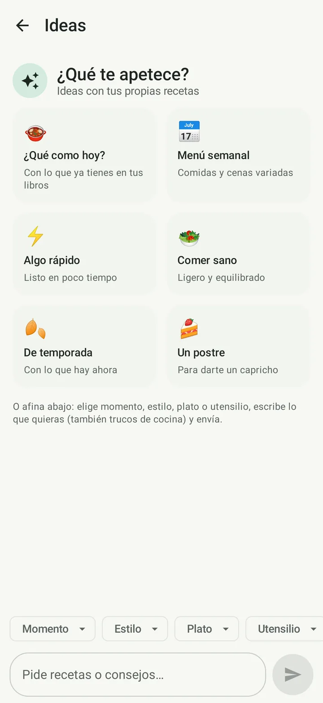
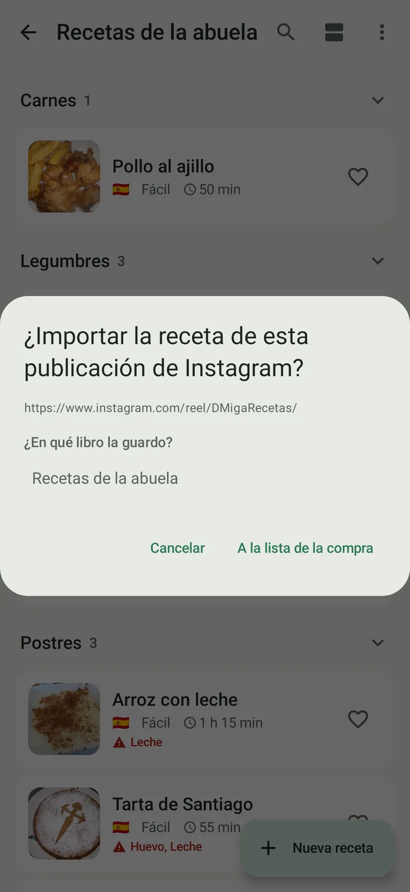
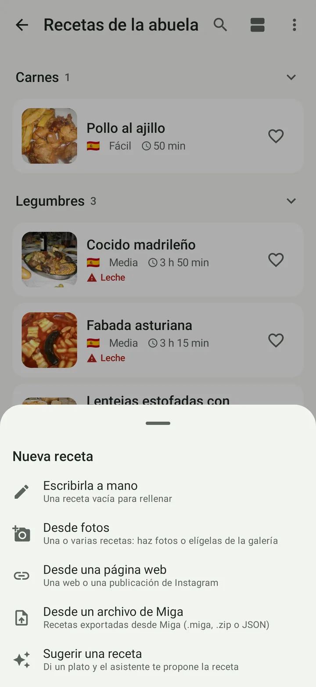

Asistente · Opcional
Un asistente de cocina que usa tu propia clave
Las funciones marcadas con ✨ usan inteligencia artificial con la clave que tú configures. Eliges el proveedor y el modelo, y Miga solo envía lo necesario para cada tarea.
Google GeminiAnthropic ClaudeOpenAIDeepSeekMistralGroqOpenRouter (modelos gratuitos)Compatible con OpenAI (Ollama, LM Studio…)
Si añades varios, se usan en el orden que elijas: si uno falla, se prueba el siguiente.
- Recetas desde fotos y webs: lee el texto de una foto o de una página y precarga el editor; al importar de una web, también la pule. Tú lo revisas antes de guardar.
- Recetas de vídeos: si un reel de Instagram o un vídeo de YouTube no trae la receta en el texto, la saca del vídeo: lo que se dice y, en YouTube con Gemini, lo que sale escrito en pantalla.
- Mejorar recetas: una o muchas a la vez: mejor redacción, ingredientes normalizados y tiempos en negrita. Nada se guarda sin tu permiso.
- Ideas: recomendaciones a partir de tus recetas, menús semanales y respuestas sobre técnicas, conservación o sustituciones.
- Salud y nutrición: valoración orientativa, calorías y macros por ración, y sustitutos de ingredientes.
- Sigue aunque salgas: las tareas largas continúan en segundo plano con una notificación que te lleva al resultado.
- Fácil de configurar: «Conectar con OpenRouter» crea la clave por ti; con el resto, «Conseguir clave» y «Probar conexión».
- Transparente: el contenido generado se marca como tal y puedes reportarlo. Si no hay clave, no se envía nada.

Novedad
Recetas de Instagram y YouTube, en tu libro
¿Has visto una receta en un reel o en un vídeo? Compártela con Miga o pega su enlace y queda guardada como una receta más, con su foto y el autor en las notas.
- Sin el asistente: si el texto de la publicación trae los ingredientes y los pasos, Miga los lee directamente.
- Escucha el vídeo ✨: si el texto no trae la receta, el asistente escucha el vídeo: Gemini oye el audio y OpenAI, Groq o Mistral lo transcriben. Revisa las cantidades.
- Desde Instagram: toca Compartir en el reel, elige Miga y di en qué libro guardarla.
- La foto buena: a tamaño completo y sin el botón de reproducir del vídeo.
- YouTube: la receta de la descripción o de la web del autor que enlaza; si no está, Gemini ve el vídeo: lo que se dice y lo que sale escrito en pantalla.


Empieza tu recetario hoy
Descarga Miga, crea tu primer libro y guarda esa receta que siempre te piden.